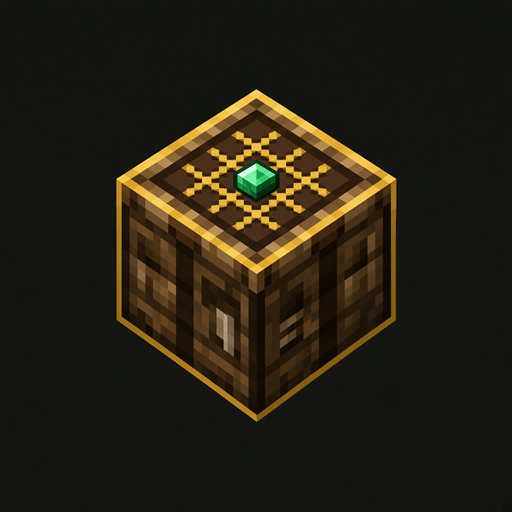

Visual makers, node procedures, a GUI designer and a real Java project for Fabric, Forge, NeoForge and Quilt.
Portable .exe · ~80 MB · Windows 10/11
Portable build. Place it anywhere and open AutoCraft.exe.